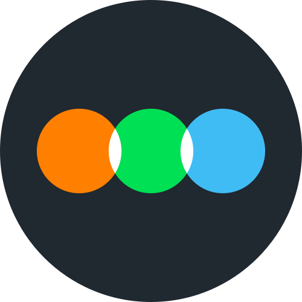

The live landing (left-aligned hero, rule 1304) over the same real TMDB posters as landing-color-v1, with the house duotone (#mtgDuo) blended over the poster's own colour at 50, 60, 67 and 75%, and 100% (live today) for reference. Chips are measured WCAG contrast of each line against the backdrop behind it (the lightest 5% of pixels).
50% grade (landing-color-v1 frame 2)Same warming (R x1.04, B x.9), brightness .6, split 60%, grain .22 and lighter-above-the-hero tint as landing-color-v1 frame 2; only the duotone share changes.
60% gradeSame warming (R x1.04, B x.9), brightness .6, split 60%, grain .22 and lighter-above-the-hero tint as landing-color-v1 frame 2; only the duotone share changes.
67% grade (two thirds)Same warming (R x1.04, B x.9), brightness .6, split 60%, grain .22 and lighter-above-the-hero tint as landing-color-v1 frame 2; only the duotone share changes.
75% gradeSame warming (R x1.04, B x.9), brightness .6, split 60%, grain .22 and lighter-above-the-hero tint as landing-color-v1 frame 2; only the duotone share changes.
100% · now (reference)Live today (rule 1297): #mtgDuo at full strength, no warming, brightness .62, split, grain .35, the live tint.
Find out, then see what you'll love and who to watch it with.

I'm on LetterboxdImport your ratings · 2–3 min→